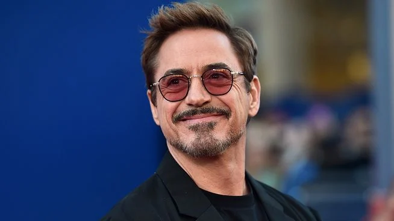

Michael C. Hall é um ator e produtor americano, nascido em 1971, conhecido por seus papéis em séries de TV como Dexter e A Sete Palmos, além de atuações na Broadway e em filmes. Ele foi casado com a atriz Jennifer Carpenter e passou por um tratamento contra o Linfoma de Hodgkin, do qual se curou.
Will Smith é um ator, rapper e produtor americano que ganhou fama com a série de televisão Um Maluco no Pedaço e se tornou um dos artistas de maior sucesso de Hollywood, estrelando filmes como Independence Day e Men in Black. Sua carreira abrange música, TV e cinema, e ele já ganhou um Oscar de Melhor Ator e múltiplos Grammys. A carreira dele envolveu o sucesso com a dupla DJ Jazzy Jeff & The Fresh Prince, antes de fazer a transição para o estrelato cinematográfico e, mais recentemente, uma polêmica no Oscar em 2022.
Robert Downey Jr. é um ator e produtor americano conhecido por sua carreira de sucesso com altos e baixos, incluindo um período de problemas com drogas e a lei, e um grande renascimento na década de 2000, impulsionado por seu papel como Tony Stark/Homem de Ferro no Universo Cinematográfico Marvel (UCM). Ele é um dos atores mais bem-sucedidos comercialmente e já foi listado pela Forbes como o mais bem pago de Hollywood.
Adam Sandler é um comediante, ator e produtor americano conhecido por seus papéis em comédias, mas que também se destacou em papéis dramáticos. Nascido em 1966, Sandler iniciou sua carreira no stand-up e integrou o elenco do programa Saturday Night Live antes de se tornar uma estrela de cinema com filmes como Billy Madison e Happy Gilmore. Ele fundou uma produtora, a Happy Madison Productions, que financiou muitos de seus filmes, e é casado com Jackie Sandler, com quem tem duas filhas.